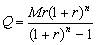

按揭計算
程式參考了網友roviury意見進行修改。
更新日期: 2012年8月22日
程式用作計算按揭問題，假定利息每月計算及息率固定不變，程式可以計算以下問題:
˙每月供款Monthly instalments (已知貸款、年利率及還款期數(月為單位))。
˙貸款 Loan (已知每月供款、年利率及還款期數)
˙還款期數 (已知每月供款、貸款及年利率)
參考公式:

(Q為每月供款，M為貨款及 r 為每月利率 (即年利率÷12))
程式 (80 bytes)
ClrMemory: 1200→X: ?→A: ?→B: ?→C: ?→D:
(1 + C÷X)^( D→Y: A=0 => BCY ÷ (XY - X◢
D => AXC-1D-1(Y - 1◢ log( 1 + C÷X , AX ÷ (AX - BC
例題1: 貸款$100,0000，年利率為6%，貸款時間為360月，求每月還款額。
按 Prog 1 再按 EXE (不輸入數值代表計算每月還款額)
100 0000 EXE (貸款)
6 EXE (年利率)
360 EXE (還款期，顯示還款額為 $5995.51)
例題2: 一項貸款，每月還款額為$5995.51，年利率為6%，還款期數為360月求貸款額。
按 Prog 1 再按 5995.51 EXE
EXE (不輸入數值代表計算貸款)
6 EXE (年利率)
360EXE (還款期，顯示貸款額為 $100 0000)
計算完結按AC終止程式
例題3: 貸款$100,0000，年利率為6%，每月還款額為$5995.51，求還款期數。
按 Prog 1 再按 5995.51 EXE (每月還款額)
100 0000 EXE (貸款)
6 EXE (年利率)
EXE (不輸入數值代表計算還款期，顯示還款期為360月)
計算完結按AC終止程式
返回 CASIO fx-50FH、fx-3650P II、fx-50FH II及fx-50F PLUS 程式集